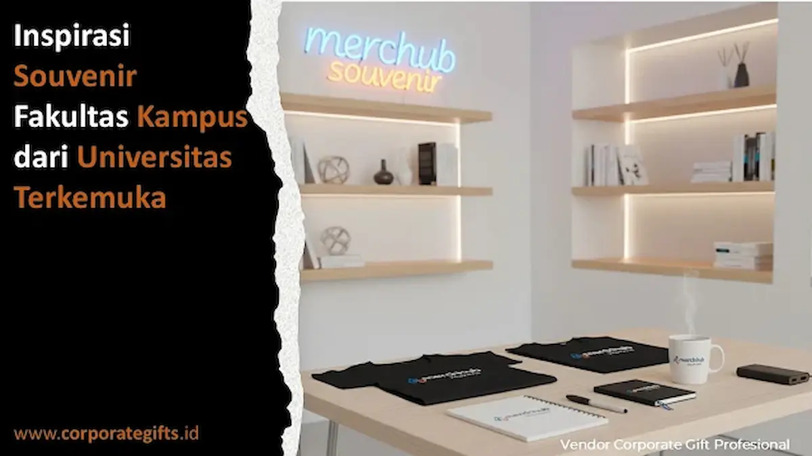

Corporate Gifts ID - Souvenir kampus adalah cinderamata resmi yang dirancang secara khusus untuk merepresentasikan identitas, nilai filosofis, dan kebanggaan suatu universitas atau fakultas. Di era modern saat ini, perguruan tinggi terkemuka tidak lagi memandang cinderamata sekadar sebagai hadiah simbolik seremonial, melainkan memanfaatkannya sebagai instrumen academic branding yang strategis guna membangun reputasi institusi jangka panjang serta menanamkan impresi profesional bagi sivitas akademika, alumni, dan mitra riset.
Dari Harvard University hingga Kyoto University, setiap produk merchandise dikurasi secara sangat teliti. Konsep souvenir yang memadukan estetika elegan dan fungsionalitas tinggi ini kini mulai diadopsi oleh berbagai perguruan tinggi negeri maupun swasta di Indonesia untuk memperkuat citra kelembagaan di kancah nasional maupun internasional.
Poin Kunci Souvenir Kampus & Fakultas:
- Representasi Prestise: Merchandise berkualitas tinggi memancarkan standar mutu dan keunggulan intelektual institusi pendidikan tinggi.
- Konsistensi Identitas: Penyelarasan warna khas fakultas, proporsi logo resmi, dan teknik cetak rapi memperkuat brand recall publik.
- Relevansi Keilmuan: Desain produk disesuaikan dengan karakteristik bidang studi (misal: gadget futuristik untuk teknik, aksen batik untuk humaniora).
- Duta Merek Organik: Penggunaan merchandise oleh mahasiswa dan alumni di ruang publik bertindak sebagai promosi reputasi kampus berkelanjutan.
Inspirasi Desain dari Kampus Terkemuka Dunia
Universitas ternama seperti University of Oxford, Stanford, dan MIT memahami betul bahwa desain fisik memiliki kekuatan simbolik yang luar biasa. Mereka menghadirkan lini merchandise eksklusif seperti tumbler stainless berinsulasi vakum dengan grafir laser logo almamater, notebook bersampul kulit sintetis dengan deboss nama fakultas, hingga set pulpen logam mewah dalam kotak hardbox berbalut beludru.
Setiap item tersebut tidak hanya mencerminkan eksklusivitas, tetapi juga memancarkan tingginya nilai intelektual. Tren ini terbukti mampu mengubah cinderamata biasa menjadi simbol prestise yang diburu oleh mahasiswa, dosen tamu, maupun pengunjung pameran akademik.
Souvenir Kampus sebagai Media Branding Akademik Strategis
Dalam lanskap promosi pendidikan tinggi yang kian kompetitif, merchandise resmi kampus memiliki daya jangkau branding yang setara dengan kampanye media massa digital. Pemilihan produk yang tepat menjadi jembatan komunikasi emosional antara universitas dan masyarakat luas.
Melalui penerapan warna identitas fakultas yang konsisten, penempatan tipografi proporsional, serta pemanfaatan material yang tahan lama, souvenir ini menanamkan memori positif kepada para penerimanya. Fakultas yang cerdas mengelola kurasi souvenir akan memperoleh peningkatan kepercayaan publik dan kemudahan dalam menjalin kemitraan strategis dengan sektor industri.

Aplikasi identitas visual dan logo fakultas pada aneka pilihan souvenir akademik fungsional.
Tabel Komparasi Konsep Souvenir Kampus Dunia vs Kampus Indonesia
Berikut perbandingan pendekatan kurasi souvenir antara perguruan tinggi global dengan implementasi terbaik di perguruan tinggi Indonesia:
| Aspek Strategis | Praktik Kampus Dunia (Ivy League & Global) | Penerapan Kampus Indonesia (PTN/PTS) | Dampak bagi Reputasi Institusi |
|---|---|---|---|
| Kurasi Pilihan Produk | Produk gaya hidup premium fungsional (tumbler SUS304, hoodie katun, agenda kulit) | Mulai beralih dari barang generik murah ke gift set eksklusif kustom | Menghadirkan nilai pakai jangka panjang dan persepsi berkelas |
| Filosofi Karakter Fakultas | Branding spesifik per department/school dengan identitas warna baku | Kustomisasi logo fakultas dan warna makara/panji almamater | Memperkuat rasa memiliki (sense of belonging) mahasiswa & dosen |
| Kemasan & Presentasi | Hardbox kaku dengan kartu sertifikat autentisitas produk resmi | Pemanfaatan boks kustom berpita satin atau sleeve motif batik institusi | Memberikan pengalaman unboxing yang sangat berkesan bagi mitra |
| Peran Alumni & Promosi | Alumni bangga menggunakan official merchandise di tempat kerja internasional | Alumni bertindak sebagai brand ambassador organik saat berjejaring profesional | Meningkatkan rekognisi akreditasi dan reputasi kampus di dunia industri |
Menyelaraskan Desain Merchandise dengan Filosofi Keilmuan Fakultas
Merchandise akademik yang ideal tidak hanya menarik secara visual, tetapi juga sarat akan makna filosofis. Karakteristik bidang keilmuan wajib tercermin dalam pemilihan produk dan sentuhan akhirnya:
- Fakultas Teknik & Ilmu Komputer: Sangat relevan mengusung konsep modern-futuristik, seperti powerbank fast-charging berbodi aluminium, flashdisk kartu OTG berkapasitas besar, atau wireless desk charger berlogo grafir laser.
- Fakultas Kedokteran & Kesehatan: Lebih tepat mengutamakan higienitas dan kesehatan, seperti tumbler vacuum food-grade SUS304, pouch perlengkapan medis portabel, atau botol semprot antibakteri higienis.
- Fakultas Ilmu Budaya, Sastra & Seni: Sangat anggun memadukan gaya klasik etnik, seperti notebook bersampul batik tulis, pembatas buku logam berpola ornamen tradisional nusantara, atau tote bag kanvas artistik.
- Fakultas Ekonomi & Bisnis: Menonjolkan kesan profesional eksekutif, seperti buku agenda jilid kulit sintetis deboss, card holder proteksi RFID, dan pulpen signature berbalut kotak magnetik.
Harmonisasi Standar Global dan Kearifan Budaya Lokal
Berbagai perguruan tinggi terkemuka di Indonesia membuktikan bahwa standar mutu internasional dapat dipadukan secara harmonis dengan nilai-nilai luhur budaya nusantara. Misalnya, Universitas Gadjah Mada (UGM) kerap menghadirkan gift set cinderamata berunsur motif tradisional Yogyakarta, sementara Institut Teknologi Bandung (ITB) lebih menonjolkan inovasi produk fungsional berbasis sains.
Strategi pengadaan souvenir yang cerdas ini sangat efektif diaplikasikan pada perayaan Dies Natalis, prosesi wisuda sarjana & pascasarjana, penandatanganan MoU kemitraan industri, maupun simposium internasional.
Investasi Strategis Komunikasi dan Reputasi Jangka Panjang
Souvenir kampus pada hakikatnya adalah saluran komunikasi berkelanjutan institusi pendidikan. Ketika para wisudawan dan alumni membawa tas laptop atau notebook berlogo almamater mereka ke ruang kantor perusahaan multinasional, mereka secara langsung menyebarkan reputasi positif universitas asal mereka.
Dengan mempercayakan proses produksi pada vendor pengadaan souvenir yang profesional dan berpengalaman, institusi Anda terjamin mendapatkan mutu bahan berstandar tinggi, hasil cetak yang presisi, serta pengemasan boks yang mewah.
Kesimpulan
Universitas dan fakultas yang ingin meningkatkan reputasi kelembagaannya harus memandang cinderamata sebagai investasi identitas merek (brand identity), bukan sekadar pernak-pernik seremonial yang menghabiskan anggaran. Sinergi antara estetika desain, nilai filosofis keilmuan, dan mutu material yang prima akan melahirkan cinderamata akademik yang berkelas dan membanggakan.
Konsultasikan kebutuhan desain dan kurasi paket souvenir kampus dan fakultas bersama tim kurator Corporate Gifts ID untuk mewujudkan cinderamata akademik yang berkesan bagi seluruh civitas almamater Anda.
Pertanyaan Seputar Souvenir Kampus & Fakultas (FAQ)

Ditulis oleh: Sholikhatun Nikmah
Creative Product Designer & Bespoke PackagingDesainer visual dan spesialis kemasan kreatif di CorporateGifts.ID dengan fokus pada personalisasi visual mockup 3D, kurasi seminar kit, souvenir akademik kampus, dan bespoke gift set korporat.
Lihat Profil Lengkap & Panduan Lainnya